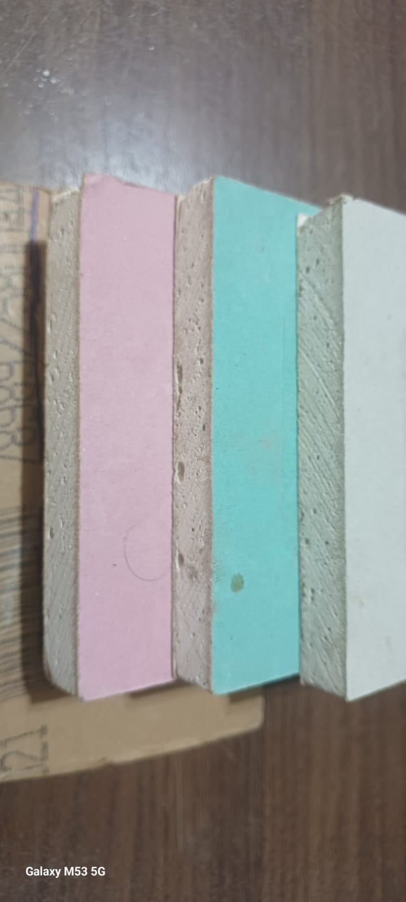
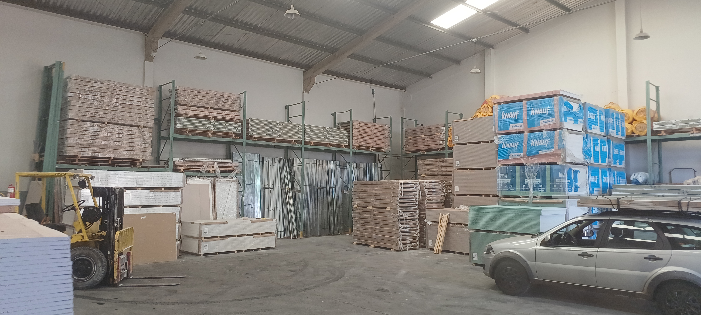
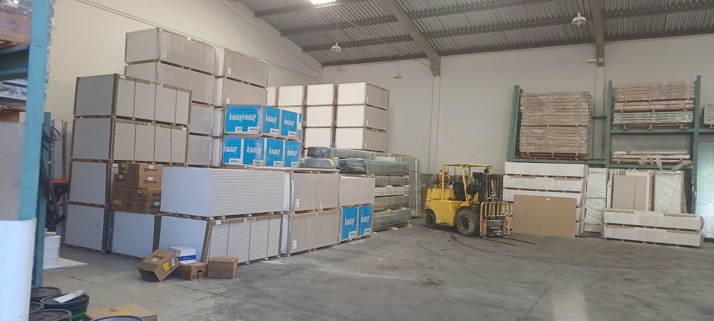
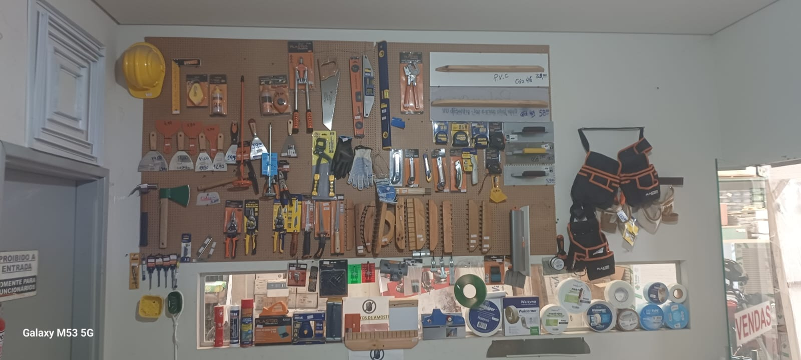
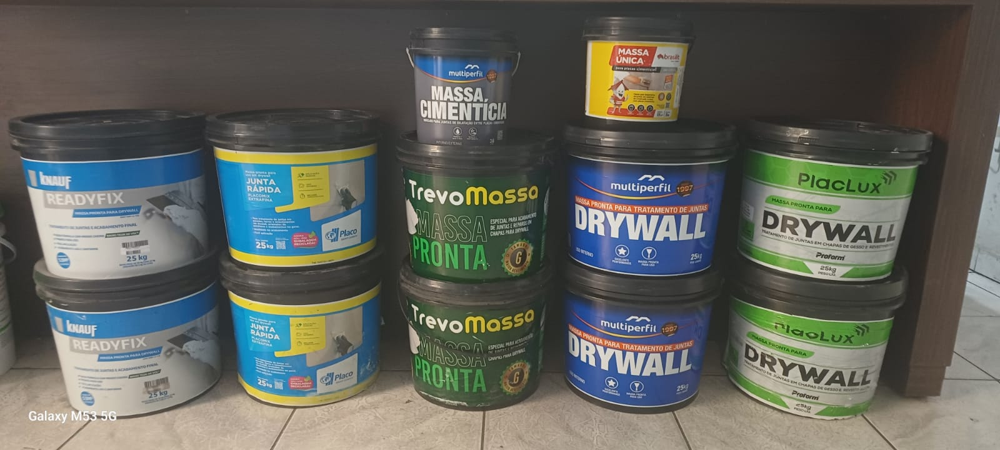
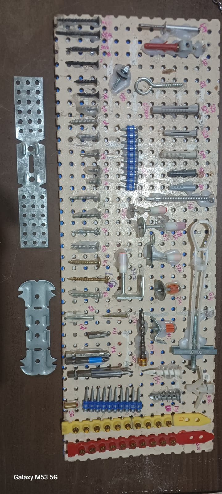

Materiais para obra a seco com variedade técnica e compra concentrada.
A GessoPlac atende quem procura drywall em Uberlândia, placas de gesso, perfis, ferramentas, portas para drywall e itens de fixação sem precisar rodar vários endereços.
Uberlândia - MG | atendimento das 7h15 às 17h00
@GESSOPLAC_A GessoPlac é distribuidora de materiais para construção a seco, com variedade para paredes e forros em drywall, gesso em pó, massas, parafusos, perfis, placas especiais, kit porta pronta e ferramentas para quem precisa comprar com mais praticidade em Uberlândia.
A GessoPlac atende quem procura drywall em Uberlândia, placas de gesso, perfis, ferramentas, portas para drywall e itens de fixação sem precisar rodar vários endereços.
Mix comercial pensado para facilitar a compra de instaladores, construtores e obras residenciais ou comerciais.
Imagens do galpão e do mostruário reforçam uma operação preparada para atender Uberlândia com mais agilidade.
Avenida Espanha, 885, com contato direto para orçamento, consulta de itens e alinhamento do pedido.
Selecione uma frente de produto para ver aplicações, itens em destaque e imagens reais da GessoPlac.

A linha de placas da GessoPlac atende composições de paredes, forros e fechamentos com materiais usados em obras residenciais, comerciais e projetos com demandas técnicas específicas.
Além do balcão, a GessoPlac trabalha com uma estrutura visualmente preparada para distribuição de placas, perfis, lã para isolamento, kits e complementos da obra a seco. Isso ajuda o cliente a enxergar melhor a capacidade de atendimento e a variedade disponível.
Drywall, gesso, massa, fixação, ferramentas e itens de apoio reunidos na mesma operação.
Atendimento para quem já sabe o que precisa e também para quem quer alinhar a lista de materiais.
Distribuição local para obras, instaladores e clientes que buscam gesso e drywall na cidade.





Se você está buscando gesso em Uberlândia, placa de gesso, porta para drywall, massa, parafuso, perfil para telhado ou ferramentas para construção a seco, a equipe pode direcionar o atendimento pelo WhatsApp, telefone ou e-mail.
Atendimento das 7h15 às 17h00